Projects
Project Lead - Experimental rocketry team
 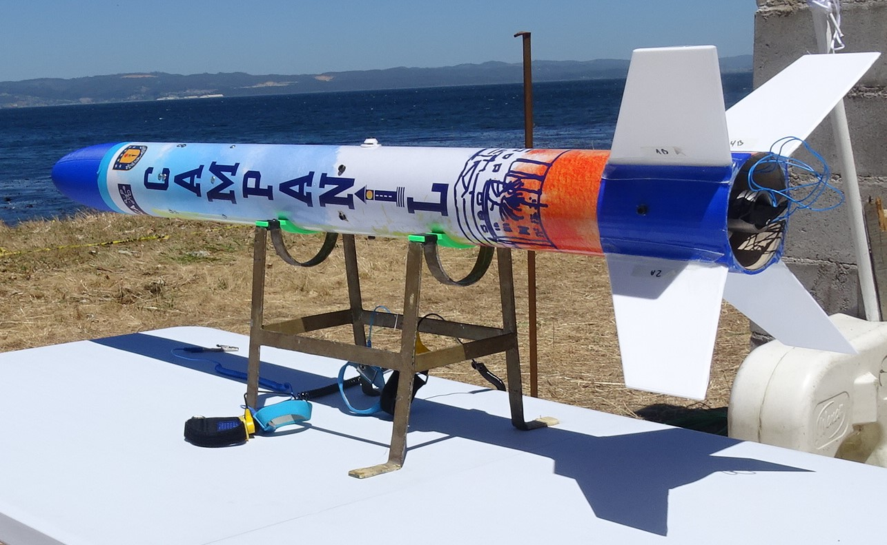
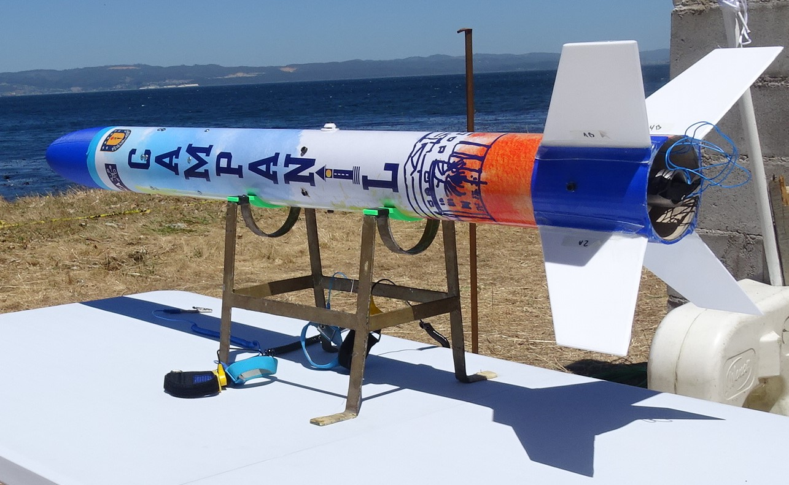
Led the development of an experimental sounding rocket within a multidisciplinary university team, combining technical leadership with hands-on engineering work. In addition to coordinating the team and defining system-level architecture, actively contributed to the design, manufacturing, and integration of multiple subsystems. Responsible for planning and executing engine static tests, subsystem qualification tests, and full vehicle integration campaigns, as well as coordinating launch operations and post-flight analysis.
Rocket Telemetry System Development
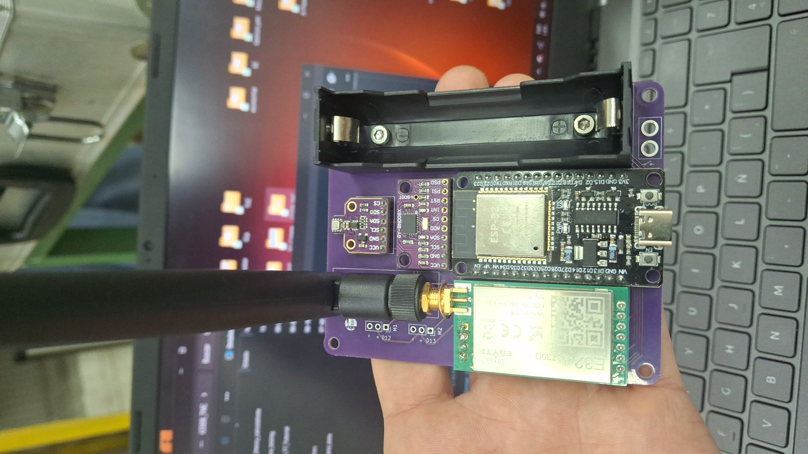 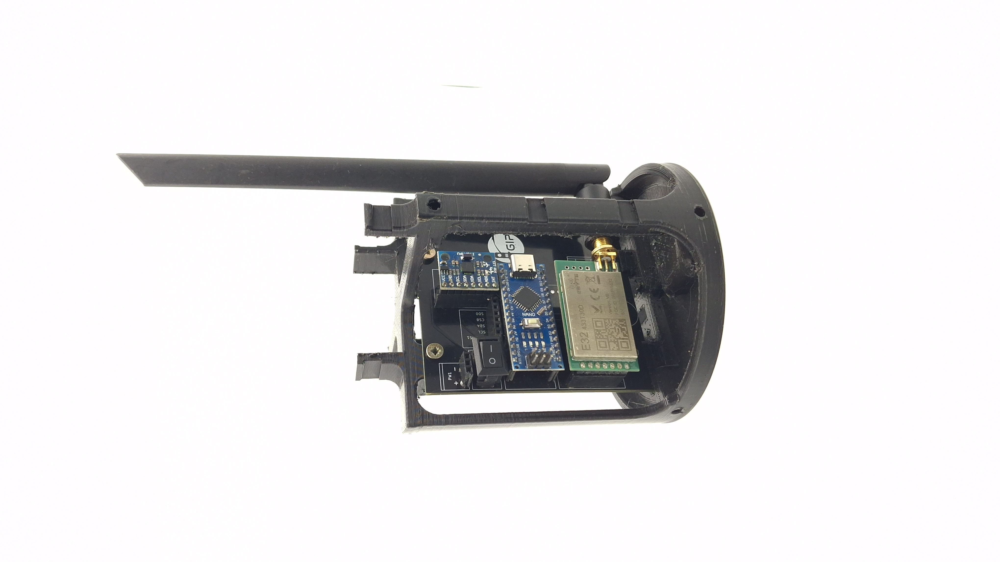Designed and implemented an onboard telemetry system for an experimental rocket, enabling real-time transmission of flight data to a ground station. The system integrates multiple sensors, embedded processing, and RF communication to monitor key flight parameters such as altitude, acceleration, system status, and timing events. Focused on reliability, data integrity, and robustness under dynamic flight conditions.
Rocket Recovery System Development
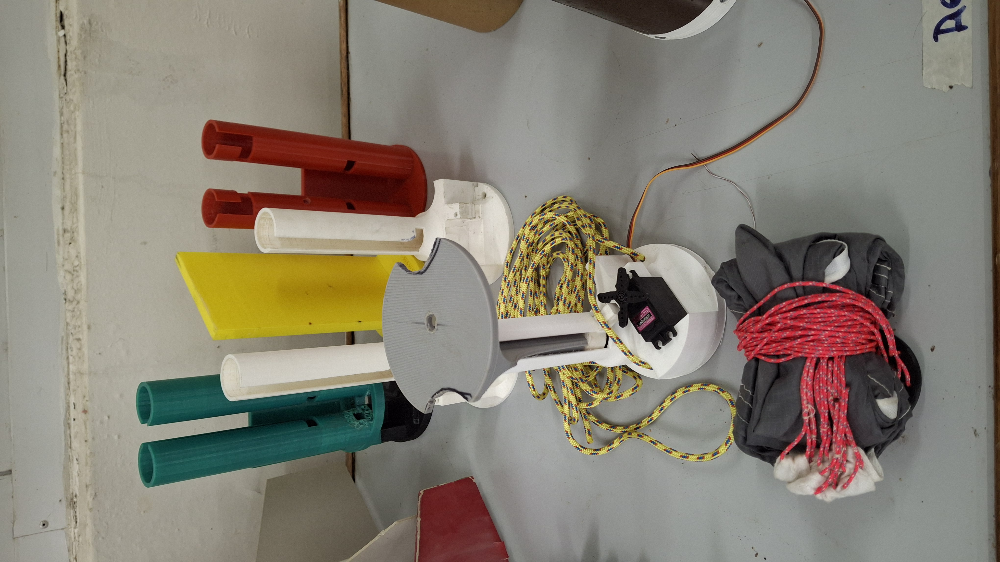 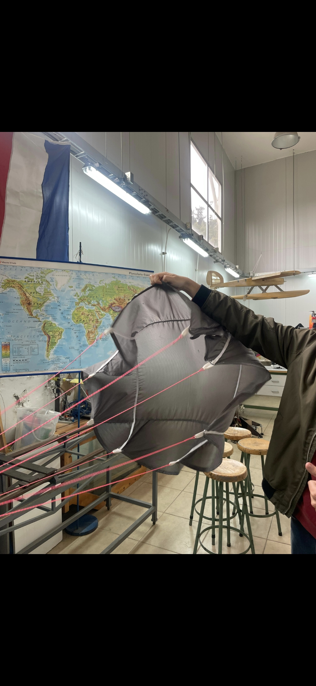Developed and tested a recovery system to ensure safe descent and vehicle retrieval after flight. The work included deployment logic design, actuator selection, and integration with onboard avionics. Ground testing and iterative refinement were conducted to validate deployment timing, mechanical reliability, and system redundancy under simulated flight conditions.
RC Car Design, Manufacturing & Optimization
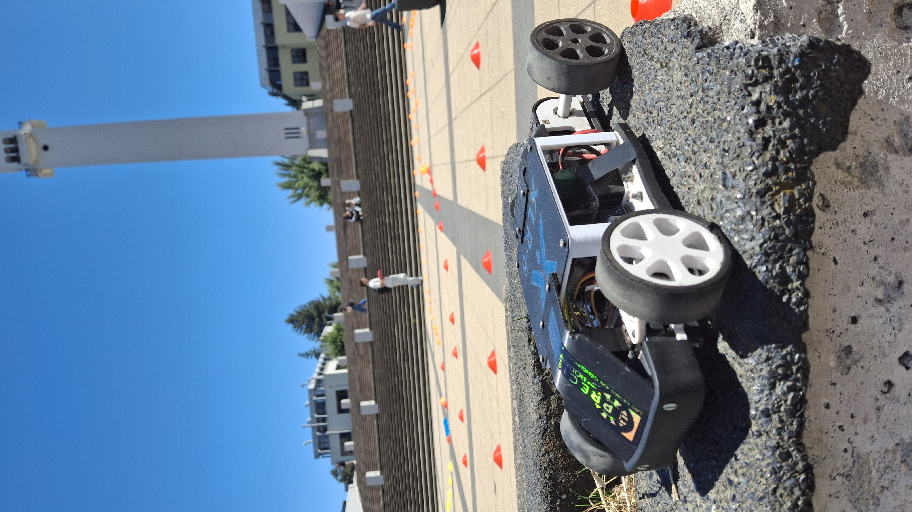 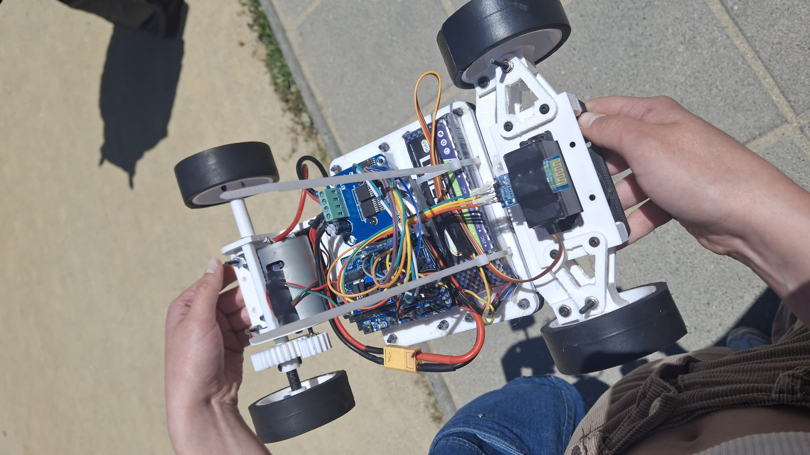Designed and manufactured a high-performance RC vehicle with a focus on mechanical optimization, weight reduction, and power efficiency. The project involved iterative design, component selection, and fabrication, followed by experimental testing to evaluate vehicle dynamics and performance. Additionally, implemented a control system to enable autonomous driving, integrating sensing, actuation, and embedded control logic to achieve stable and repeatable vehicle behavior under different operating conditions.
Thrust vectoring control
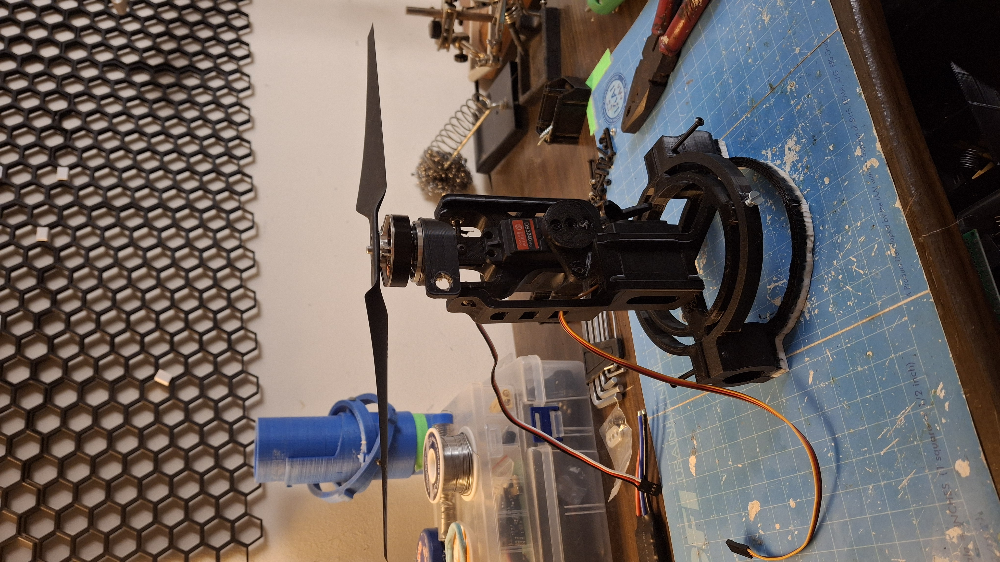 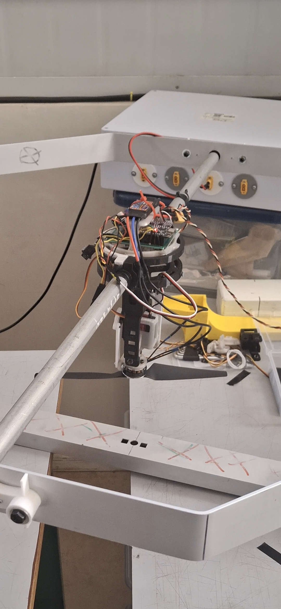Designed and built a ground-based test bench for evaluating thrust vector control mechanisms. The work included the mechanical design and manufacturing of the TVC mechanism, development of the required electronics and embedded control hardware, and integration of actuators and sensors. The test bench was used to characterize system dynamics, control authority, and repeatability, serving as a validation platform prior to potential flight integration.
Rocket Trajectory Simulation
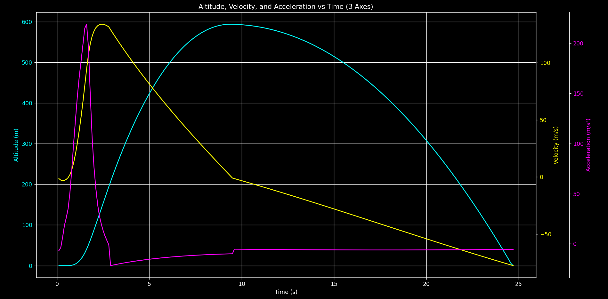 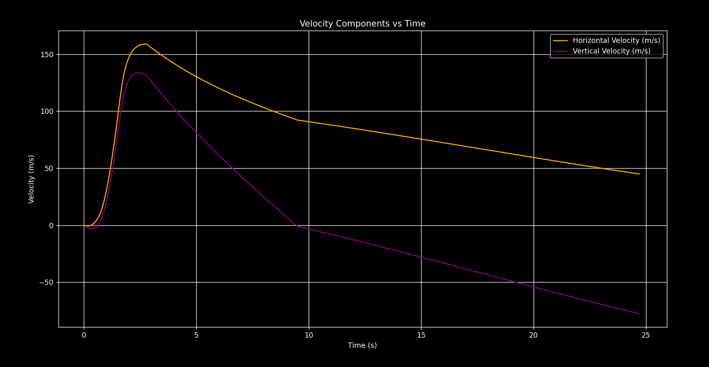Developed a ballistic trajectory simulation tool in Python to model and analyze projectile motion under realistic physical conditions. The simulator incorporates numerical integration techniques and physical models to evaluate the influence of initial conditions, forces, and system parameters on trajectory behavior. Used as a design and analysis tool to support engineering decisions and validate theoretical models against expected system performance.